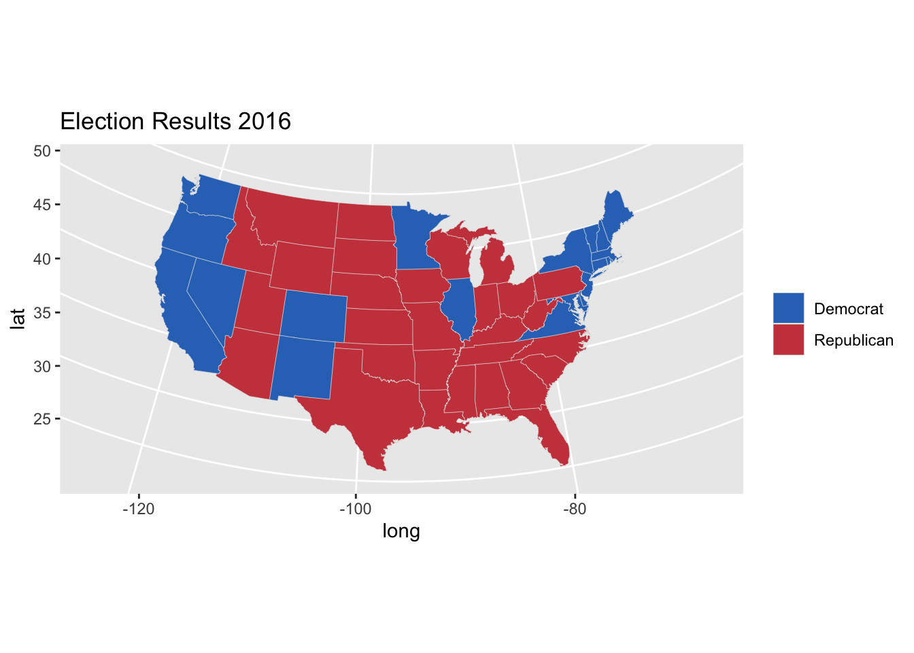
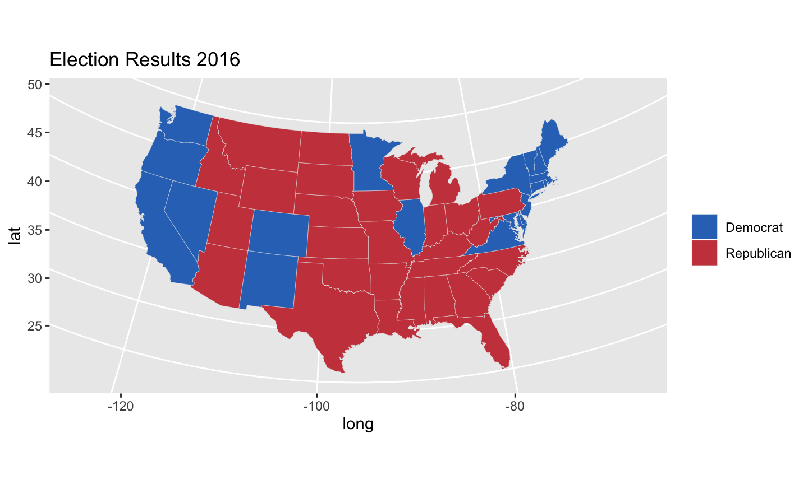
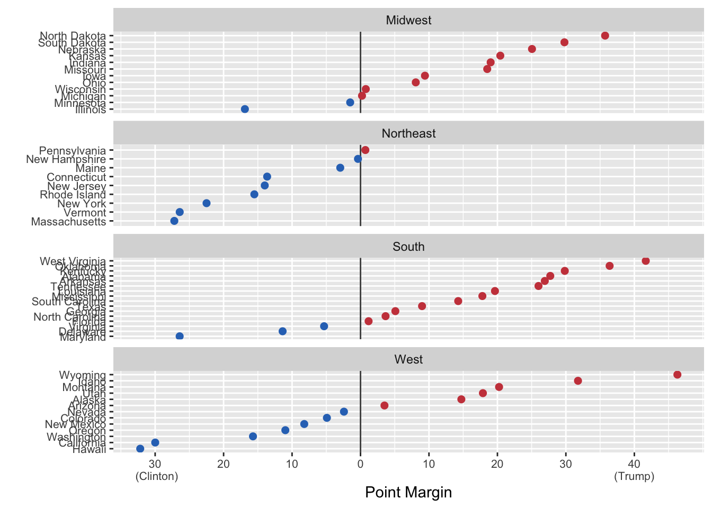

- A bit about me
- A bit about you
- Course Webpage
- Git, Github, etc…
1/14/2020
## Joining, by = "region"

library(maps)
library(socviz)
library(tidyverse)
party_colors <- c("#2E74C0", "#CB454A")
us_states <- map_data("state")
election$region <- tolower(election$state)
us_states_elec <- left_join(us_states, election)
## Joining, by = "region"
p0 <- ggplot(data = us_states_elec,
mapping = aes(x = long, y = lat,
group = group, fill = party))
p1 <- p0 + geom_polygon(color = "gray90", size = 0.1) +
coord_map(projection = "albers", lat0 = 39, lat1 = 45)
p2 <- p1 + scale_fill_manual(values = party_colors) +
labs(title = "Election Results 2016", fill = NULL)
p2

